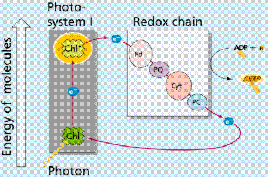
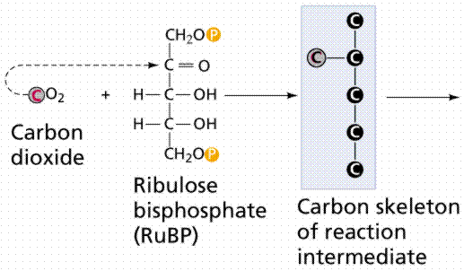
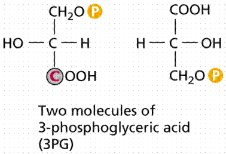

The structure of the chloroplast and photosynthetic membranes | Stages of Photosynthesis | The Light Reactions
Dark Reaction | C-4 Pathway | The Carbon Cycle | Learning Objectives | Terms | Review Questions | Links
Photosynthesis is the process by which plants, some bacteria, and some protistans use the energy from sunlight to produce sugar, which cellular respiration converts into ATP, the "fuel" used by all living things. The conversion of unusable sunlight energy into usable chemical energy, is associated with the actions of the green pigment chlorophyll. Most of the time, the photosynthetic process uses water and releases the oxygen that we absolutely must have to stay alive. Oh yes, we need the food as well!
We can write the overall reaction of this process as:
Most of us don't speak chemicalese, so the above chemical equation translates as:
six molecules of water plus six molecules of carbon dioxide produce one molecule of sugar plus six molecules of oxygen
Diagram of a typical plant, showing the inputs and outputs of the photosynthetic process. Image from Purves et al., Life: The Science of Biology, 4th Edition, by Sinauer Associates (www.sinauer.com) and WH Freeman (www.whfreeman.com), used with permission.
Plants are the only photosynthetic organisms to have leaves (and not all plants have leaves). A leaf may be viewed as a solar collector crammed full of photosynthetic cells.
The raw materials of photosynthesis, water and carbon dioxide, enter the cells of the leaf, and the products of photosynthesis, sugar and oxygen, leave the leaf.
Cross section of a leaf, showing the anatomical features important to the study of photosynthesis: stoma, guard cell, mesophyll cells, and vein. Image from Purves et al., Life: The Science of Biology, 4th Edition, by Sinauer Associates (www.sinauer.com) and WH Freeman (www.whfreeman.com), used with permission.
Water enters the root and is transported up to the leaves through specialized plant cells known as xylem (pronounces zigh-lem). Land plants must guard against drying out (desiccation) and so have evolved specialized structures known as stomata to allow gas to enter and leave the leaf. Carbon dioxide cannot pass through the protective waxy layer covering the leaf (cuticle), but it can enter the leaf through an opening (the stoma; plural = stomata; Greek for hole) flanked by two guard cells. Likewise, oxygen produced during photosynthesis can only pass out of the leaf through the opened stomata. Unfortunately for the plant, while these gases are moving between the inside and outside of the leaf, a great deal water is also lost. Cottonwood trees, for example, will lose 100 gallons of water per hour during hot desert days. Carbon dioxide enters single-celled and aquatic autotrophs through no specialized structures.
Pea Leaf Stoma, Vicea sp. (SEM x3,520). This image is copyright Dennis Kunkel at www.DennisKunkel.com, used with permission.
White light is separated into the different colors (=wavelengths) of light by passing it through a prism. Wavelength is defined as the distance from peak to peak (or trough to trough). The energy of is inversely porportional to the wavelength: longer wavelengths have less energy than do shorter ones.
Wavelength and other saspects of the wave nature of light. Image from Purves et al., Life: The Science of Biology, 4th Edition, by Sinauer Associates (www.sinauer.com) and WH Freeman (www.whfreeman.com), used with permission.
The order of colors is determined by the wavelength of light. Visible light is one small part of the electromagnetic spectrum. The longer the wavelength of visible light, the more red the color. Likewise the shorter wavelengths are towards the violet side of the spectrum. Wavelengths longer than red are referred to as infrared, while those shorter than violet are ultraviolet.
The electromagnetic spectrum. Image from Purves et al., Life: The Science of Biology, 4th Edition, by Sinauer Associates (www.sinauer.com) and WH Freeman (www.whfreeman.com), used with permission.
Light behaves both as a wave and a particle. Wave properties of light include the bending of the wave path when passing from one material (medium) into another (i.e. the prism, rainbows, pencil in a glass-of-water, etc.). The particle properties are demonstrated by the photoelectric effect. Zinc exposed to ultraviolet light becomes positively charged because light energy forces electrons from the zinc. These electrons can create an electrical current. Sodium, potassium and selenium have critical wavelengths in the visible light range. The critical wavelength is the maximum wavelength of light (visible or invisible) that creates a photoelectric effect.
A pigment is any substance that absorbs light. The color of the pigment comes from the wavelengths of light reflected (in other words, those not absorbed). Chlorophyll, the green pigment common to all photosynthetic cells, absorbs all wavelengths of visible light except green, which it reflects to be detected by our eyes. Black pigments absorb all of the wavelengths that strike them. White pigments/lighter colors reflect all or almost all of the energy striking them. Pigments have their own characteristic absorption spectra, the absorption pattern of a given pigment.
Absorption and transmission of different wavelengths of light by a hypothetical pigment. Image from Purves et al., Life: The Science of Biology, 4th Edition, by Sinauer Associates (www.sinauer.com) and WH Freeman (www.whfreeman.com), used with permission.
Chlorophyll is a complex molecule. Several modifications of chlorophyll occur among plants and other photosynthetic organisms. All photosynthetic organisms (plants, certain protistans, prochlorobacteria, and cyanobacteria) have chlorophyll a. Accessory pigments absorb energy that chlorophyll a does not absorb. Accessory pigments include chlorophyll b (also c, d, and e in algae and protistans), xanthophylls, and carotenoids (such as beta-carotene). Chlorophyll a absorbs its energy from the Violet-Blue and Reddish orange-Red wavelengths, and little from the intermediate (Green-Yellow-Orange) wavelengths.
Molecular model of chlorophyll. The above image is from http://www.nyu.edu:80/pages/mathmol/library/photo.
Molecular model of carotene. The above image is from http://www.nyu.edu:80/pages/mathmol/library/photo.
Carotenoids and chlorophyll b absorb some of the energy in the green wavelength. Why not so much in the orange and yellow wavelengths? Both chlorophylls also absorb in the orange-red end of the spectrum (with longer wavelengths and lower energy). The origins of photosynthetic organisms in the sea may account for this. Shorter wavelengths (with more energy) do not penetrate much below 5 meters deep in sea water. The ability to absorb some energy from the longer (hence more penetrating) wavelengths might have been an advantage to early photosynthetic algae that were not able to be in the upper (photic) zone of the sea all the time.
The molecular structure of chlorophylls. Image from Purves et al., Life: The Science of Biology, 4th Edition, by Sinauer Associates (www.sinauer.com) and WH Freeman (www.whfreeman.com), used with permission.
The action spectrum of photosynthesis is the relative effectiveness of different wavelengths of light at generating electrons. If a pigment absorbs light energy, one of three things will occur. Energy is dissipated as heat. The energy may be emitted immediately as a longer wavelength, a phenomenon known as fluorescence. Energy may trigger a chemical reaction, as in photosynthesis. Chlorophyll only triggers a chemical reaction when it is associated with proteins embedded in a membrane (as in a chloroplast) or the membrane infoldings found in photosynthetic prokaryotes such as cyanobacteria and prochlorobacteria.
Absorption spectrum of several plant pigments (left) and action spectrum of elodea (right), a common aquarium plant used in lab experiments about photosynthesis. Images from Purves et al., Life: The Science of Biology, 4th Edition, by Sinauer Associates (www.sinauer.com) and WH Freeman (www.whfreeman.com), used with permission.
The thylakoid is the structural unit of photosynthesis. Both photosynthetic prokaryotes and eukaryotes have these flattened sacs/vesicles containing photosynthetic chemicals. Only eukaryotes have chloroplasts with a surrounding membrane.
Thylakoids are stacked like pancakes in stacks known collectively as grana. The areas between grana are referred to as stroma. While the mitochondrion has two membrane systems, the chloroplast has three, forming three compartments.

Structure of a chloroplast. Image from Purves et al., Life: The Science of Biology, 4th Edition, by Sinauer Associates (www.sinauer.com) and WH Freeman (www.whfreeman.com), used with permission.
Photosynthesis is a two stage process. The first process is the Light Dependent Process (Light Reactions), requires the direct energy of light to make energy carrier molecules that are used in the second process. The Light Independent Process (or Dark Reactions) occurs when the products of the Light Reaction are used to form C-C covalent bonds of carbohydrates. The Dark Reactions can usually occur in the dark, if the energy carriers from the light process are present. Recent evidence suggests that a major enzyme of the Dark Reaction is indirectly stimulated by light, thus the term Dark Reaction is somewhat of a misnomer. The Light Reactions occur in the grana and the Dark Reactions take place in the stroma of the chloroplasts.
Overview of the two steps in the photosynthesis process. Image from Purves et al., Life: The Science of Biology, 4th Edition, by Sinauer Associates (www.sinauer.com) and WH Freeman (www.whfreeman.com), used with permission.
In the Light Dependent Processes (Light Reactions) light strikes chlorophyll a in such a way as to excite electrons to a higher energy state. In a series of reactions the energy is converted (along an electron transport process) into ATP and NADPH. Water is split in the process, releasing oxygen as a by-product of the reaction. The ATP and NADPH are used to make C-C bonds in the Light Independent Process (Dark Reactions).
In the Light Independent Process, carbon dioxide from the atmosphere (or water for aquatic/marine organisms) is captured and modified by the addition of Hydrogen to form carbohydrates (general formula of carbohydrates is [CH2O]n). The incorporation of carbon dioxide into organic compounds is known as carbon fixation. The energy for this comes from the first phase of the photosynthetic process. Living systems cannot directly utilize light energy, but can, through a complicated series of reactions, convert it into C-C bond energy that can be released by glycolysis and other metabolic processes.
Photosystems are arrangements of chlorophyll and other pigments packed into thylakoids. Many Prokaryotes have only one photosystem, Photosystem II (so numbered because, while it was most likely the first to evolve, it was the second one discovered). Eukaryotes have Photosystem II plus Photosystem I. Photosystem I uses chlorophyll a, in the form referred to as P700. Photosystem II uses a form of chlorophyll a known as P680. Both "active" forms of chlorophyll a function in photosynthesis due to their association with proteins in the thylakoid membrane.
Action of a photosystem. This image is from the University of Minnesota page at http://genbiol.cbs.umn.edu/Multimedia/examples.html.
Photophosphorylation is the process of converting energy from a light-excited electron into the pyrophosphate bond of an ADP molecule. This occurs when the electrons from water are excited by the light in the presence of P680. The energy transfer is similar to the chemiosmotic electron transport occurring in the mitochondria. Light energy causes the removal of an electron from a molecule of P680 that is part of Photosystem II. The P680 requires an electron, which is taken from a water molecule, breaking the water into H+ ions and O-2 ions. These O-2 ions combine to form the diatomic O2 that is released. The electron is "boosted" to a higher energy state and attached to a primary electron acceptor, which begins a series of redox reactions, passing the electron through a series of electron carriers, eventually attaching it to a molecule in Photosystem I. Light acts on a molecule of P700 in Photosystem I, causing an electron to be "boosted" to a still higher potential. The electron is attached to a different primary electron acceptor (that is a different molecule from the one associated with Photosystem II). The electron is passed again through a series of redox reactions, eventually being attached to NADP+ and H+ to form NADPH, an energy carrier needed in the Light Independent Reaction. The electron from Photosystem II replaces the excited electron in the P700 molecule. There is thus a continuous flow of electrons from water to NADPH. This energy is used in Carbon Fixation. Cyclic Electron Flow occurs in some eukaryotes and primitive photosynthetic bacteria. No NADPH is produced, only ATP. This occurs when cells may require additional ATP, or when there is no NADP+ to reduce to NADPH. In Photosystem II, the pumping to H ions into the thylakoid and the conversion of ADP + P into ATP is driven by electron gradients established in the thylakoid membrane.

Noncyclic photophosphorylation (top) and cyclic photophosphorylation (bottom). These processes are better known as the light reactions. Images from Purves et al., Life: The Science of Biology, 4th Edition, by Sinauer Associates (www.sinauer.com) and WH Freeman (www.whfreeman.com), used with permission.
The above diagrams present the "old" view of photophosphorylation. We now know where the process occurs in the chloroplast, and can link that to chemiosmotic synthesis of ATP.
Chemiosmosis as it operates in photophosphorylation within a chloroplast. Images from Purves et al., Life: The Science of Biology, 4th Edition, by Sinauer Associates (www.sinauer.com) and WH Freeman (www.whfreeman.com), used with permission.
Halobacteria, which grow in extremely salty water, are facultative aerobes, they can grow when oxygen is absent. Purple pigments, known as retinal (a pigment also found in the human eye) act similar to chlorophyll. The complex of retinal and membrane proteins is known as bacteriorhodopsin, which generates electrons which establish a proton gradient that powers an ADP-ATP pump, generating ATP from sunlight without chlorophyll. This supports the theory that chemiosmotic processes are universal in their ability to generate ATP.
Carbon-Fixing Reactions are also known as the Dark Reactions (or Light Independent Reactions). Carbon dioxide enters single-celled and aquatic autotrophs through no specialized structures, diffusing into the cells. Land plants must guard against drying out (desiccation) and so have evolved specialized structures known as stomata to allow gas to enter and leave the leaf. The Calvin Cycle occurs in the stroma of chloroplasts (where would it occur in a prokaryote?). Carbon dioxide is captured by the chemical ribulose biphosphate (RuBP). RuBP is a 5-C chemical. Six molecules of carbon dioxide enter the Calvin Cycle, eventually producing one molecule of glucose. The reactions in this process were worked out by Melvin Calvin (shown below).
The above image is from http://www-itg.lbl.gov/ImgLib/COLLECTIONS/BERKELEY-LAB/PEOPLE/INDIVIDUALS/index/BIOCHEM_523.html, Ernest OrlandoLawrence Berkeley National Laboratory. " One of the new areas, cultivated both in Donner and the Old Radiation Laboratory, was the study of organic compounds labeled with carbon-14. Melvin Calvin took charge of this work at the end of the war in order to provide raw materials for John Lawrence's researches and for his own study of photosynthesis. Using carbon-14, available in plenty from Hanford reactors, and the new techniques of ion exchange, paper chromatography, and radioautography, Calvin and his many associates mapped the complete path of carbon in photosynthesis. The accomplishment brought him the Nobel prize in chemistry in 1961. (The preceding information was excerpted from the text of the Fall 1981 issue of LBL Newsmagazine.) Citation Caption: LBL News, Vol.6, No.3, Fall 1981 Melvin Calvin shown with some of the apparatus he used to study the role of carbon in photosynthesis."

The first steps in the Calvin ccycle. Image from Purves et al., Life: The Science of Biology, 4th Edition, by Sinauer Associates (www.sinauer.com) and WH Freeman (www.whfreeman.com), used with permission.
The first stable product of the Calvin Cycle is phosphoglycerate (PGA), a 3-C chemical. The energy from ATP and NADPH energy carriers generated by the photosystems is used to attach phosphates to (phosphorylate) the PGA. Eventually there are 12 molecules of glyceraldehyde phosphate (also known as phosphoglyceraldehyde or PGAL, a 3-C), two of which are removed from the cycle to make a glucose. The remaining PGAL molecules are converted by ATP energy to reform 6 RuBP molecules, and thus start the cycle again. Remember the complexity of life, each reaction in this process, as in Kreb's Cycle, is catalyzed by a different reaction-specific enzyme.
Some plants have developed a preliminary step to the Calvin Cycle (which is also referred to as a C-3 pathway), this preamble step is known as C-4. While most C-fixation begins with RuBP, C-4 begins with a new molecule, phosphoenolpyruvate (PEP), a 3-C chemical that is converted into oxaloacetic acid (OAA, a 4-C chemical) when carbon dioxide is combined with PEP. The OAA is converted to Malic Acid and then transported from the mesophyll cell into the bundle-sheath cell, where OAA is broken down into PEP plus carbon dioxide. The carbon dioxide then enters the Calvin Cycle, with PEP returning to the mesophyll cell. The resulting sugars are now adjacent to the leaf veins and can readily be transported throughout the plant.
C-4 photosynthsis involves the separation of carbon fixation and carbohydrate systhesis in space and time. Image from Purves et al., Life: The Science of Biology, 4th Edition, by Sinauer Associates (www.sinauer.com) and WH Freeman (www.whfreeman.com), used with permission.
The capture of carbon dioxide by PEP is mediated by the enzyme PEP carboxylase, which has a stronger affinity for carbon dioxide than does RuBP carboxylase When carbon dioxide levels decline below the threshold for RuBP carboxylase, RuBP is catalyzed with oxygen instead of carbon dioxide. The product of that reaction forms glycolic acid, a chemical that can be broken down by photorespiration, producing neither NADH nor ATP, in effect dismantling the Calvin Cycle. C-4 plants, which often grow close together, have had to adjust to decreased levels of carbon dioxide by artificially raising the carbon dioxide concentration in certain cells to prevent photorespiration. C-4 plants evolved in the tropics and are adapted to higher temperatures than are the C-3 plants found at higher latitudes. Common C-4 plants include crabgrass, corn, and sugar cane. Note that OAA and Malic Acid also have functions in other processes, thus the chemicals would have been present in all plants, leading scientists to hypothesize that C-4 mechanisms evolved several times independently in response to a similar environmental condition, a type of evolution known as convergent evolution.
Photorespiration. Image from Purves et al., Life: The Science of Biology, 4th Edition, by Sinauer Associates (www.sinauer.com) and WH Freeman (www.whfreeman.com), used with permission.
We can see anatomical differences between C3 and C4 leaves.
Leaf anatomy of a C3 (top) and C4 (bottom) plant. Images from Purves et al., Life: The Science of Biology, 4th Edition, by Sinauer Associates (www.sinauer.com) and WH Freeman (www.whfreeman.com), used with permission.
Plants may be viewed as carbon sinks, removing carbon dioxide from the atmosphere and oceans by fixing it into organic chemicals. Plants also produce some carbon dioxide by their respiration, but this is quickly used by photosynthesis. Plants also convert energy from light into chemical energy of C-C covalent bonds. Animals are carbon dioxide producers that derive their energy from carbohydrates and other chemicals produced by plants by the process of photosynthesis.
The balance between the plant carbon dioxide removal and animal carbon dioxide generation is equalized also by the formation of carbonates in the oceans. This removes excess carbon dioxide from the air and water (both of which are in equilibrium with regard to carbon dioxide). Fossil fuels, such as petroleum and coal, as well as more recent fuels such as peat and wood generate carbon dioxide when burned. Fossil fuels are formed ultimately by organic processes, and represent also a tremendous carbon sink. Human activity has greatly increased the concentration of carbon dioxide in air. This increase has led to global warming, an increase in temperatures around the world, the Greenhouse Effect. The increase in carbon dioxide and other pollutants in the air has also led to acid rain, where water falls through polluted air and chemically combines with carbon dioxide, nitrous oxides, and sulfur oxides, producing rainfall with pH as low as 4. This results in fish kills and changes in soil pH which can alter the natural vegetation and uses of the land. The Global Warming problem can lead to melting of the ice caps in Greenland and Antarctica, raising sea-level as much as 120 meters. Changes in sea-level and temperature would affect climate changes, altering belts of grain production and rainfall patterns.
After completing this chapter you should be able to:
|
RuBP (Ribulose Biphosphate) |
1. The organic molecule produced directly by photosynthesis is: a) lipids; b) sugar; c) amino acids; d) DNA
2. The photosynthetic process removes ___ from the environment. a) water; b) sugar; c) oxygen; d) chlorophyll; e) carbon dioxide
3. The process of splitting water to release hydrogens and electrons occurs during the _____ process. a) light dependent; b) light independent; c) carbon fixation; d) carbon photophosphorylation; e) glycolysis
4. The process of fixing carbon dioxide into carbohydrates occurs in the ____ process. a) light dependent; b) light independent; c) ATP synthesis; d) carbon photophosphorylation; e) glycolysis
5. Carbon dioxide enters the leaf through ____. a) chloroplasts; b) stomata: c) cuticle; d) mesophyll cells; e) leaf veins
6. The cellular transport process by which carbon dioxide enters a leaf (and by which water vapor and oxygen exit) is ___. a) osmosis; b) active transport; c. co- transport; d) diffusion; e) bulk flow
7. Which of the following creatures would not be an autotroph? a) cactus; b) cyanobacteria; c) fish; d) palm tree; e) phytoplankton
8. The process by which most of the world's autotrophs make their food is known as ____. a) glycolysis; b) photosynthesis; c) chemosynthesis; d) herbivory; e) C-4 cycle
9. The process of ___ is how ADP + P are converted into ATP during the Light dependent process. a) glycolysis; b) Calvin Cycle; c) chemiosmosis; d) substrate-level phosphorylation; e) Kreb's Cycle
10. Once ATP is converted into ADP + P, it must be ____. a) disassembled into components (sugar, base, phosphates) and then ressembled; b) recharged by chemiosmosis; c) converted into NADPH; d) processed by the glycolysis process; e) converted from matter into energy.
11. Generally speaking, the longer the wavelenght of light, the ___ the available energy of that light. a) smaller; b) greater; c) same
12. The section of the electromagnetic spectrum used for photosynthesis is ___. a) infrared; b) ultraviolet; c) x-ray; d) visible light; e) none of the above
13. The colors of light in the visible range (from longest wavelength to shortest) is ___. a) ROYGBIV; b) VIBGYOR; c) GRBIYV; d) ROYROGERS; e) EBGDF
14. The photosynthetic pigment that is essential for the process to occur is ___. a) chlorophyll a; b) chlorophyll b; c) beta carotene; d) xanthocyanin; e) fucoxanthin
15. When a pigment reflects red light, _____. a) all colors of light are absorbed; b) all col;ors of light are reflected; c) green light is reflected, all others are absorbed; d) red light is reflected, all others are absorbed; e) red light is absorbed after it is reflected into the internal pigment molecules.
16. Chlorophyll a absorbs light energy in the ____color range. a) yellow-green; b) red-organge; c) blue violet; d) a and b; e) b and c.
17. A photosystem is ___. a) a collection of hydrogen-pumping proteins; b) a collection of photosynthetic pigments arranged in a thylakjoid membrane; c) a series of electron-accepting proteins arranged in the thylakoid membrane; d. found only in prokaryotic organisms; e) multiple copies of chlorophyll a located in the stroma of the chloroplast.
18. The individual flattened stacks of membrane material inside the chloroplast are known as ___. a) grana; b) stroma; c) thylakoids; d) cristae; e) matrix
19. The fluid-filled area of the chloroplast is the ___. a) grana; b) stroma; c) thylakoids; d) cristae; e) matrix
20. The chloroplast contains all of these except ___. a) grana; b) stroma; c) DNA; d) membranes; e) endoplasmic reticulum
21. The chloroplasts of plants are most close in size to __. a) unfertilized human eggs; b) human cheek cells; c) human nerve cells; d) bacteria in the human mouth; e) viruses
22. Which of these photosynthetic organisms does not have a chloroplast? a) plants; b) red algae; c) cyanobacteria; d) diatoms; e) dinoflagellates
23. The photoelectric effect refers to ____. a) emission of electrons from a metal when energy of a critical wavelength strikes the metal; b) absorbtion of electrons from the surrounding environment when energy of a critical wavelength is nearby; c) emission of electrons from a metal when struck by any wavelength of light; d) emission of electrons stored in the daytime when stomata are open at night; e) release of NADPH and ATP energy during the Calvin Cycvle when light iof a specific wavelength strikes the cell.
24. Light of the green wavelengths is commonly absorbed by which accessory pigment? a) chlorophyll a; b) chlorophyll b; c) phycocyanin; d) beta carotene
25. The function of the electron transport proteins in the thyakoid membranes is ___. a) production of ADP by chemiosmosis; b) production of NADPH by substrate-level phosphorylation; c) pumping of hydrogens into the thylakoid space for later generation of ATP by chemiosmosis; d) pumping of hydrogens into the inner cristae space for later generation of ATP by chemiosmosis; e) preparation of water for eventual incorporation into glucose
26. ATP is known as the energy currency of the cell because ____. a) ATP is the most readily usable form of energy for cells; b) ATP passes energy along in an electron transport chain; c) ATP energy is passed to NADPH; d) ATP traps more energy than is produced in its formation; e) only eukaryotic cells use this energy currency.
27. Both cyclic and noncyclic photophosphorylation produce ATP. We can infer that the purpose of ATP in photosynthesis is to ____. a) supply hydrogen to the carbohydrate; b) supply carbon to the carbohydrate; c) supply energy that can be used to form a carbohydrate; d) transfer oxygens from the third phosphate group to the carbohydrate molecule; e) convert RuBP into PGA
28. The role of NADPH in oxygen-producing photosynthesis is to ____. a) supply hydrogen to the carbohydrate; b) supply carbon to the carbohydrate; c) supply energy that can be used to form a carbohydrate; d) transfer oxygens from the third phosphate group to the carbohydrate molecule; e) convert RuBP into PGA.
29. The dark reactions require all of these chemicals to proceed except ___. a) ATP; b) NADPH; c) carbon dioxide; d) RUBP; e) oxygen
30. The first stable chemical formed by the Calvin Cycle is _____. a) RUBP; b) RU/18; c) PGA; d) PGAL; e) Rubisco
31. The hydrogen in the carbohydrate produced by the Calvin Cycle comes from ___ a.) ATP; b) NADPH; c) the environment if the pH is very acidic; d) a and b; e) a and c
32. The carbon incorporated into the carbohydrate comes from ___. a) ATP; b) NADPH; c) carbon dioxide; d) glucose; e) organic molecules
33. C-4 photosynthesis is so named because _____. a) it produces a three carbon compound as the first stable product of photosynthesis; b) it produces a four carbon compound as the first stable produc of photosynthesis; c) it produces four ATP and four NADPH molecules for carbon fixation.; d) there are only four steps in this form of carbon fixation into carbohydrate.
Back to Table of Contents | Go to CELLULAR RESPIRATION
Email: mj.farabee@emcmail.maricopa.edu
Chosen Value of the Week 1/30/98
Last modified:
The URL of this page is: